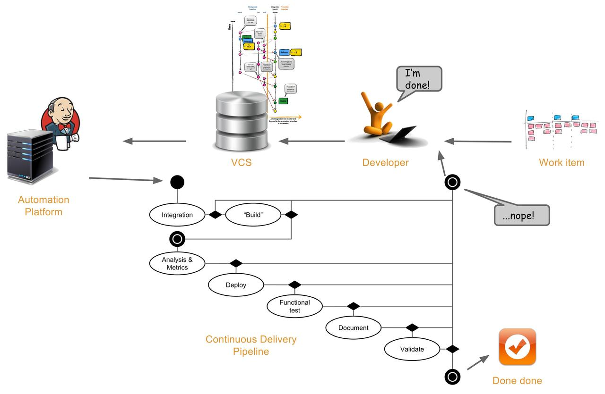

Continuous Integration vs. Continuous Delivery vs. Continuous Deployment
What is the difference between these three terms? My university provides the following definitions:
Continuous Integration basically just means that the developer's working copies are synchronized with a shared mainline several times a day.
Continuous Delivery is described as the logical evolution of continuous integration: Always be able to put a product into production!
Continuous Deployment is described as the logical next step after continuous delivery: Automatically deploy the product into production whenever it passes QA!
They also provide a warning: Sometimes the term "Continuous Deployment" is also used if you are able to continuously deploy to the test system.
All this leaves me confused. Any explaination that is a little more detailed (or comes with an example) is appreciated!
Answer
Continuous Integration
I Agree with your university's definition. Continuous Integration is a strategy for how a developer can integrate code to the mainline continuously - as opposed to frequently.
You might claim that it's merely a branching strategy in your version control system.
It has to do with the size of the tasks you assign to a developer; If a task is estimated to take 4-5 man-days then the developer will have no incitement to deliver anything for the next 4-5 days, because he's not done with anything - yet.
So size matters:
small task = continuous integration big task = frequent integration
The ideal task size is not bigger than a day's work. This way a developer will naturally have at least one integration per day.
Continuous Delivery
There are basically three schools within Continuous Delivery:
Continuous Delivery is a natural extension of Continuous Integration
This school, looks at the Addison-Wesley "Martin Fowler" signature series and makes the assumption that since the 2007 release was called "Continuous Integration" and the one that followed in 2011 was called "Continuous Delivery" they are probably volume 1+2 of the same conceptual idea that has to do with continuous something.
Continuous Delivery has to do with Agile Software Development
This school takes off-set in the idea that Continuous Delivery is all about being able to support the principles in the agile movement, not just as a conceptual idea or a letter of intent but for real - in real life.
Taking offset in the first principle in the Agile Manifesto where the term "continuous delivery" is actually used for the first time:
Our highest priority is to satisfy the customer through early and continuous delivery of valuable software.
This school claims that "Continuous Delivery" is a paradigm that embraces everything required to implement an automated verification of your "definition of done".
This school accepts that "Continuous Delivery" and the buzz word or megatrend "DevOps" are flip sides of the same coin, in the sense that they both try to embrace or encapsulate this new paradigm or approach and not just a technique.
Continuous Delivery is a synonym to Continuous Deployment
The third school advocates that Continuous Deployment and Continuous Delivery can be used interchangeably to mean the same thing.
When something is ready in the hands of the developers, it's immediately delivered to the end-users, which in most cases will mean that it should be deployed to the production environment. Hence "Deploy" and "Deliver" means the same.
Which school to join
Your university clearly joined the first school and claims that we're referring to volume 1+2 of the same publication series. My opinion is that this is a misuse of the term Continuous Delivery.
I personally advocate for the understanding that Continuous Delivery is related to implementing a real-life support for the ideas and concepts stated by the agile movement. So I joined the school that says the term embraces a whole paradigm - like "DevOps".
The school that uses delivery as a synonym to deploy is mostly advocated by tool vendors who create deployment consoles, trying to get a bit of hype from the more widespread use of the term Continuous Delivery.
Continuous Deployment
The focus on Continuous Deployment is mostly relevant in domains where the end user's access to software updates relies on the update of some centralized source for this information and where this centralized source is not always easy to update because it's monolithic or has (too) high coherence by nature (web, SOA, Databases etc.).
For a lot of domains that produces software where there is no centralized source of information (devices, consumer products, client installations etc.) or where the centralized source for information is easy to update (app stores artifact management systems, Open Source repositories etc.), there is almost no hype about the term Continuous Deployment at all. They just deploy; it's not a big thing - it's not a pain that requires special focus.
The fact that Continuous Deployment is not something that is generically interesting to everyone is also an argument that the school that claims that "delivery" and "deploy" are synonyms got it all wrong. Because Continuous Delivery actually makes perfectly good sense to everyone - even if you are doing embedded software in devices or releasing Open Source plugins for a framework.
Your university's definition that Continuous Deployment is a natural next step of Continuous Delivery implicitly assumes that every delivery that is QA'ed should go become available to the end-users immediately, is closer to the definition that my tribe use to describe the term "Continous Release", which, in turn, is another concept that doesn't generically makes sense to everyone either.
A release can be a very strategic or political thing and there is no reason to assume that everybody would want to do this all the time (unless they are an online bookstore a streaming service type of company). Nevertheless, companies that don't blindly release everything all the time may have any number of reasons why they would want to be masters of deployment anyway, so they too do Continuous Deployment. Not of release to production, but of release- candidates to production-like environments.
Again I believe your university got it wrong. They are mistaking "Continuous Deployment" for "Continuous Release".
Continuous deployment is simply the discipline of continuously being able to move the result of a development process to a production-like environment where functional testing can be executed in full scale.
The Continuous Delivery Storyline
In the picture it all comes alive:

The Continuous Integration process is the first two actions in the state- transition diagram. Which - if successful - kicks off the Continuous Delivery pipeline that implements the definition of done. Deployment is just one of the many actions that will have to be done continuously in this pipeline. Ideally, the process is automated from the point where the developer commits to the VCS to the point where the pipeline has confirmed that we have a valid release candidate.